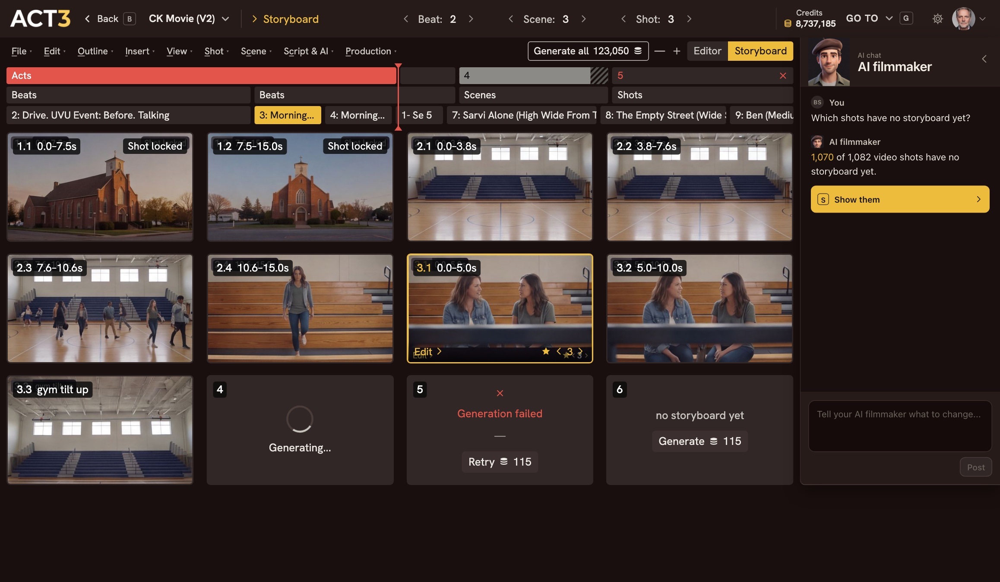
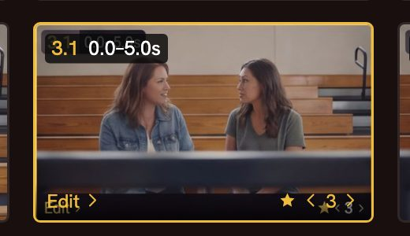

Step 6 of 6
Approve and move on
Step through versions with ‹ › on the selected tile. Click the star to keep the one you like. Then click Editor to go build video.

★ ‹ 3 › Editor
Star to keep itClose-up: the selected tile. The star and ‹ 3 › sit at its bottom right.
Approving a frame
Every rebuild adds a version. The stepper on the selected tile, ‹ 3 ›, moves through them without changing anything. The star marks the version your project uses; that is how you approve a frame. You can also right-click a tile and choose Use this version ★. Every change shows a toast with Undo.
Your decision: how far to take the storyboard
For a short video, approve every frame. For a feature with a thousand video shots, approve the key scenes and let the rest stand; you will see every shot again as you build video. When a scene is final, right-click a tile and choose Lock Shot so nothing changes it by accident.
Love a frame as it is? Right-click it and choose Use as first frame. The video for that shot then starts from exactly that picture.
Where you go next
Click Editor on the view switch at the top to go back to the Editor. From there, improve a shot's first frame (guide 6), then build its video and move through the timeline (guide 7). Continue takes you back to the Step-by-Step Guide to pick one.